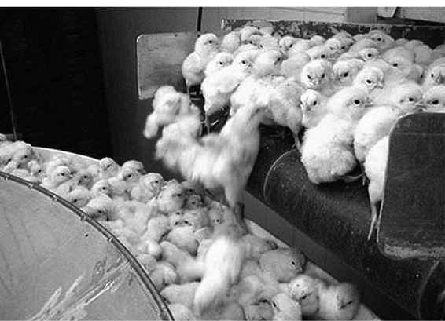

Kapitel 17
Das Räderwerk der Industrie
Die moderne Wirtschaft wächst, weil wir an die Zukunft glauben und weil Kapitalisten bereit sind, ihre Profite zurück in die Produktion zu investieren. Das allein reicht allerdings noch nicht aus. Damit die Wirtschaft wachsen kann, sind außerdem Energie und Rohstoffe nötig. Aber diese sind begrenzt. Es wäre also nicht vollkommen abwegig anzunehmen, dass sie früher oder später zur Neige gehen und das ganze System in sich zusammenfallen könnte.
Doch die Erfahrung aus der Vergangenheit zeigt, dass Energie und Rohstoffe nur theoretisch begrenzt sind. Denn obwohl wir seit Jahrhunderten immer mehr davon verbrauchen, ist die verfügbare Menge nicht kleiner geworden, im Gegenteil. Wann immer eine Energie- und Rohstoffknappheit das Wirtschaftswachstum zu drosseln drohte, flossen neue Investitionen in die wissenschaftliche Forschung und technische Entwicklung. So wurden nicht nur bestehende Vorkommen besser erschlossen, sondern auch völlig neue Materialien und Energiequellen erfunden.
Nehmen wir die Fahrzeugindustrie. In den vergangenen dreihundert Jahren hat die Menschheit Milliarden von Fahrzeugen gebaut – von Handwagen und Schubkarren über Eisenbahnen und Autos bis hin zu Düsenflugzeugen und Space Shuttles. Man sollte meinen, dass wir durch diese gewaltige Produktion inzwischen sämtliche Rohstoffe erschöpft haben und mittlerweile am Boden des Tellers kratzen. Doch das Gegenteil ist der Fall. Während die Fahrzeugindustrie im Jahr 1700 ihre Wagen und Kutschen aus Holz und Eisen baute, verwendet sie heute ein wahres Wunderhorn neuer Materialien wie Aluminium, Titan und vor allem Kunststoffe, von deren Existenz unsere Vorfahren noch nichts ahnten. Und während im Jahr 1700 die Energie vor allem aus der Muskelkraft der Schmiede und Zimmerleute, aus mit Holz befeuerten Schmelzöfen und mit Wind und Wasser betriebenen Mühlen stammte, werden die Fließbänder bei Volkswagen und Airbus heute mit Verbrennungsmotoren und Atomstrom in Gang gehalten. Der Fahrzeugbau hat eine Revolution erlebt, genau wie fast jede andere menschliche Tätigkeit. Diese Revolution ist die Industrielle Revolution.
*
Seit Jahrtausenden nutzten die Menschen eine Vielfalt von Energiequellen: Sie verbrannten organische Materialien wie Holz und machten Naturgewalten wie Wind- und Wasserkraft nutzbar. Die bei der Verbrennung von Holz freigesetzte Wärmeenergie wurde verwendet, um Metalle zu schmelzen, Häuser zu heizen, Kuchen zu backen und feindliche Städte niederzubrennen. Und die Bewegungsenergie von Wind und Wasser wurde mit Hilfe von Segeln und Schaufelrädern eingefangen, um Schiffe und Mühlsteine anzutreiben. Doch diese Energiequellen hatten eine entscheidende Schwäche: Nicht überall wuchsen Bäume, der Wind blies immer, wenn man ihn nicht brauchte, und um die Wasserkraft nutzen zu können, musste man an einem Fluss wohnen.
Es gab aber noch ein viel größeres Problem: Niemand wusste, wie man eine Energieform in eine andere übersetzen konnte. Mit der Bewegungsenergie von Wind und Wasser ließen sich zwar Schiffe und Mühlen bewegen, aber kein Eisen schmelzen. Und umgekehrt ließen sich keine Schiffe und Mühlen bewegen, indem man Holz verfeuerte und Wärmeenergie erzeugte. Die Menschheit kannte nur eine einzige Maschine, die diese magischen Verwandlungen vornehmen konnte: den Körper. In natürlichen Stoffwechselprozessen verbrennt der Körper organische Brennstoffe namens Nahrung und übersetzt die freigesetzte Energie in Muskelbewegungen. Wir essen Brot, verbrennen die enthaltenen Kohlenhydrate und Fette und bewegen mit dieser Energie unsere Arme und Beine, um einen Karren zu ziehen.
Da tierische und menschliche Körper die einzigen Maschinen waren, die Energie umwandeln konnte, stand bei fast allen Tätigkeiten die Muskelkraft im Mittelpunkt. Menschliche Muskeln bauten Karren und Häuser, die Muskeln von Ochsen pflügten Felder, die Muskeln von Pferden transportierten Güter. Die Energie, mit der diese organischen Muskelmaschinen betrieben wurden, stammte letztlich aus einer einzigen Quelle: den Pflanzen. Und diese Pflanzen wiederum erhielten ihre Energie von der Sonne. Im Prozess der Photosynthese nahmen sie Sonnenenergie auf und speicherten sie in organischen Verbindungen. Fast alles, was der Mensch tat, wurde also von Sonnenenergie betrieben, die von Pflanzen eingefangen und in Muskelkraft übersetzt wurde.
Die menschliche Geschichte wurde daher lange von zwei großen Kreisläufen beherrscht: dem Wachstumskreislauf der Pflanzen und den Kreisläufen der Sonnenenergie (dem Tages- und dem Jahreszyklus). Solange die Sonnenenergie knapp und der Weizen noch nicht reif war, hatten die Menschen wenig Energie. Die Scheunen waren leer, die Steuereintreiber untätig, die Soldaten träge, und die Könige hielten Frieden. Wenn die Sonne hoch am Himmel stand und der Weizen goldgelb wurde, fiel der Startschuss. Die Bauern brachten die Ernte ein und füllten ihre Scheunen. Die Steuereintreiber eilten herbei, um ihren Anteil zu kassieren. Die Soldaten spannten die Muskeln und schärften die Schwerter. Die Könige beriefen ihre Räte ein und planten den nächsten Feldzug. Alle wurden von der Sonnenenergie befeuert – eingefangen und frei Haus geliefert von Weizen und Kartoffeln.
Das Geheimnis in der Küche
Jahrtausendelang hatten die Menschen tagtäglich Umgang mit der wichtigsten Erfindung in der Geschichte der Energieerzeugung, ohne es zu bemerken. Jedes Mal, wenn sie Wasser erhitzten, um sich einen Tee, eine Suppe oder Kartoffeln zu kochen, und den Topf einen Moment lang auf dem Feuer vergaßen, hörten sie in der Küche den Deckel klappern und rannten zurück. Vor ihren Augen wurde Wärmeenergie in Bewegung übersetzt, ohne dass dazu ein menschlicher oder tierischer Stoffwechsel nötig gewesen wäre. Aber das fiel niemandem auf. Die Vorstellung, dass man etwas verbrennen könnte, um etwas anderes zu bewegen, war der menschlichen Vorstellungskraft einfach zu fremd.
Ein teilweiser Durchbruch bei der Übersetzung von Wärme in Bewegung war die Erfindung von Feuerwaffen. Als die Chinesen im 9. Jahrhundert das Schießpulver erfanden, verwendeten sie es zunächst zum Bau von Bomben und Minen. Es dauerte Jahrhunderte, ehe sie die in der Explosion erzeugte Hitze verwendeten, um Geschosse zu befördern – vielleicht hatte ein Bombenbastler sein Pulver in einem Mörser zerstoßen und sich gewundert, als es knallte und der Stößel davonflog. Die erste funktionstüchtige Kanone fauchte erst 600 Jahre nach der Erfindung des Schießpulvers auf den Schlachtfeldern Asiens und Europas.
Doch der Gedanke, dass sich Wärme in Bewegung übersetzen lassen sollte, schien nach wie vor derart abwegig, dass nach der Geburt der Artillerie noch drei Jahrhunderte vergehen sollten, ehe jemand eine Maschine erfand, die sich ohne Muskelkraft bewegte. Diese bahnbrechende Erfindung stammte aus den britischen Kohlebergwerken. Als die Bevölkerung von England und Schottland wuchs, wurden die Wälder gerodet, um Äcker anzulegen, Häuser zu bauen und Energie für die expandierende Wirtschaft zu liefern. Als das Feuerholz knapp wurde, sahen die Briten den Ersatz in der Kohle. Viele der neuen Kohlebergwerke lagen in feuchten Regionen und das eindringende Grundwasser verhinderte einen Abbau der Kohle in tieferliegenden Flözen. Es war dringend eine Lösung gefragt. Gegen 1700 drang ein sonderbares Geräusch aus den Schächten der Bergwerke. Dieses Geräusch – ein Vorbote der Industriellen Revolution – war zunächst kaum vernehmbar, doch mit jedem Jahrzehnt wurde es lauter, bis die ganze Erde unter dem ohrenbetäubenden Lärm erzitterte. Dieses sonderbare Geräusch stammte von einer Dampfmaschine.
Es gibt verschiedene Arten von Dampfmaschinen, doch das Prinzip ist immer dasselbe. Man verbrennt einen Brennstoff wie Kohle, und mit der erzeugten Hitze wird Wasser verdampft. Der Dampf dehnt sich aus und drückt auf einen Kolben. Dieser Kolben bewegt sich, und alles mit dem Kolben verbundene wird ebenfalls bewegt. Und schon haben Sie Hitze in Bewegung übersetzt! In den britischen Bergwerken des 18. Jahrhunderts wurde der Kolben mit einer Pumpe verbunden, die das Wasser aus dem Grund der Schächte beförderte. Die frühesten Maschinen waren unglaublich ineffizient, und man musste eine riesige Menge Kohle verbrennen, um kleine Mengen Wasser abzupumpen. Aber Kohle hatten die Bergwerke ja genug, also spielte es keine Rolle.
In den folgenden Jahrzehnten verbesserten britische Ingenieure die Dampfmaschine immer weiter, holten sie aus den Bergwerken und benutzten sie, um Webstühle und Spinnmaschinen anzutreiben. Dank dieser Revolution der Textilindustrie ließen sich billige Stoffe in immer größeren Mengen herstellen. Innerhalb kürzester Zeit wurde Großbritannien zur Werkstatt der Welt. Doch was noch wichtiger war, als die Dampfmaschinen aus den Bergwerken geholt wurden, platzte ein Knoten: Wenn man mit der Verbrennung von Kohle Webstühle antreiben konnte, warum sollte man mit derselben Technik nicht auch andere Dinge bewegen können, zum Beispiel Fahrzeuge?
Im Jahr 1825 verband ein britischer Ingenieur eine Dampfmaschine mit den Loren, die die Kohle aus dem Bergwerk transportierten. Die Maschine zog die Wägen auf mehr als 20 Kilometer langen Eisenschienen vom Bergwerk zum nächsten Hafen. Es war die erste Dampflokomotive der Geschichte. Und wenn sich mit dem Dampf Kohle transportieren ließ, warum dann nicht auch andere Güter? Oder Menschen? Am 15. September 1830 wurde zwischen Liverpool und Manchester die erste Zugverbindung eröffnet. Die Lokomotiven wurden von derselben Dampfenergie angetrieben, die zuvor Wasser aus Bergwerken gepumpt und Webstühle in Bewegung gesetzt hatte. Und nur zwanzig Jahre später hatte Großbritannien ein Schienennetz von mehreren Zehntausend Kilometer Länge.99
Spätestens ab diesem Moment waren die Menschen besessen von dem Gedanken, dass sich mit Hilfe neuer Maschinen eine Form der Energie in eine andere übersetzen ließ. Jede Form der Energie konnte jede beliebige Tätigkeit übernehmen, vorausgesetzt, man konnte die richtige Maschine dafür erfinden. Als Physiker beispielsweise erkannten, welche gewaltigen Energiemengen in einem Atom gespeichert sind, kamen sie sofort zu dem Schluss, dass sich diese Energie freisetzen und für verschiedenste Zwecke nutzen ließ, sei es um Strom zu erzeugen, Fahrzeuge anzutreiben oder Städte dem Erdboden gleichzumachen. Zwischen der Erfindung des Schießpulvers durch die chinesischen Alchemisten und der Einäscherung Konstantinopels durch die Türken vergingen sechshundert Jahre. Aber zwischen Albert Einsteins Entdeckung, dass sich Masse in Energie umwandeln lässt, und der Einäscherung Hiroschimas und Nagasakis vergingen nur vierzig Jahre.
Eine weitere bahnbrechende Erfindung war der Verbrennungsmotor, der innerhalb von weniger als einer Generation das menschliche Transportwesen revolutionierte und Erdöl in flüssige politische Macht verwandelte. Petroleum war schon seit Jahrtausenden bekannt und wurde zur Imprägnierung, Beleuchtung und als Schmiermittel verwendet. Doch bis vor etwas mehr als einem Jahrhundert interessiert sich kaum jemand dafür, und der Gedanke, dass jemand Blut dafür vergießen könnte, muss den Menschen damals lächerlich erschienen sein. Kriege führte man um Land, Gold, Pfeffer oder Sklaven – aber um Petroleum? Was für ein alberner Gedanke.
Noch erstaunlicher war der Aufstieg der Elektrizität. Vor zwei Jahrhunderten spielte der elektrische Strom in der Wirtschaft keine Rolle und kam bestenfalls in obskuren wissenschaftlichen Experimenten und billigen Taschenspielertricks zum Einsatz. Doch dank einer Reihe von Erfindungen verwandelte er sich in unseren allgegenwärtigen Flaschengeist. Wir schnippen mit dem Finger, und er saust bis ans Ende der Welt und erfüllt uns jeden Wunsch. Er druckt Bücher und näht Kleider, er hält unser Gemüse frisch und gefriert unsere Eiskrem, er kocht unser Essen und tötet Verbrecher, er registriert unsere Gedanken und zeichnet unser Lächeln auf, er macht die Nacht zum Tag und unterhält uns mit Fernsehshows. Kaum jemand versteht, wie er das alles fertigbringt, und noch viel weniger Menschen könnten sich heute ein Leben ohne elektrischen Strom vorstellen.
Ein Meer von Energie
Im Grunde genommen ist die Industrielle Revolution nichts anderes als eine Revolution der Energieumwandlung. Dank dieser Revolution stehen uns heute nahezu grenzenlose Mengen von Energie zur Verfügung. Die einzige Grenze ist unsere Unwissenheit. Alle paar Jahrzehnte entdecken wir eine neue Energiequelle, sodass die Gesamtsumme der verfügbaren Energie immer weiter wächst.
Warum befürchten trotzdem so viele Menschen, dass uns irgendwann die Energie ausgehen könnte? Warum warnen sie, dass uns eine Katastrophe ereilt, wenn unsere fossilen Energiereserven aufgebraucht sind? Es herrscht doch ganz offensichtlich kein Mangel an Energie. Wir wissen nur noch nicht, wie wir sie umwandeln und für unsere Zwecke nutzen können. Die in den fossilen Brennstoffvorkommen der Erde gespeicherte Energiemenge ist winzig im Vergleich zu der Energie, die die Sonne jeden Tag kostenlos ins All schleudert. Davon kommt zwar nur ein Bruchteil auf der Erde an, doch unser Planet erhält immer noch Jahr für Jahr Zuwendungen in Höhe von 3.766.800 Exajoule Sonnenenergie (ein Exajoule ist eine Energieeinheit. Ein Joule entspricht der Energie, die Sie aufwenden müssen, um einen Apfel einen Meter hoch zu heben. Ein Exajoule sind Milliarden Milliarden Joule – das sind eine Menge Äpfel).100 Von dieser gewaltigen Energiemenge fangen sämtliche Pflanzen unseres Planeten mit ihrem Prozess der Photosynthese lediglich 3000 Exajoule ein.101 Wir Menschen verbrauchen zur Zeit pro Jahr sogar nur 500 Exajoule – so viel, wie die Sonne in anderthalb Stunden auf die Erde schickt.102 Und das ist nur die Sonnenenergie. Dazu kommen weitere riesige Energiequellen, zum Beispiel die Kernenergie oder die Gravitation, die sich in den Gezeiten bemerkbar macht.
Vor der Industriellen Revolution war der menschliche Energiemarkt fast ausschließlich von Pflanzen abhängig. Die Menschen lebten an einem grünen Energiefluss, der pro Jahr 3000 Exajoule mit sich führte, und versuchten, so viel Energie aus dem Fluss zu pumpen, wie sie nur konnten. Doch sie konnten nur eine bestimmte Menge entnehmen, ohne dass der Fluss austrocknete. Im Verlauf der Industriellen Revolution stellten wir jedoch fest, dass wir in Wirklichkeit neben einem nahezu grenzenlosen Ozean der Energie mit Abermillionen von Exajoule leben. Jetzt müssen wir nur noch bessere Pumpen erfinden.
*
Die immer effektivere Nutzung und Umwandlung von Energie löste auch ein anderes Problem, das dem Wirtschaftswachstum Fesseln anlegte: die Rohstoffknappheit. Als die Menschen lernten, billig an große Mengen von Energie zu kommen, konnten sie Rohstoffvorkommen erschließen, die früher unzugänglich gewesen wären (zum Beispiel Eisenerze in Sibirien), oder die Rohstoffe von immer weiter entfernten Lieferanten beziehen (zum Beispiel Wolle, die in Australien geschoren und in Großbritannien verarbeitet wurde). Gleichzeitig konnte die Menschheit mithilfe wissenschaftlicher Entdeckungen immer neue Rohstoffe erfinden, zum Beispiel die Kunststoffe, oder zuvor unbekannte natürliche Rohstoffe entdecken, zum Beispiel Silikon oder Aluminium.
Das Aluminium wurde erst in den 1820er Jahren entdeckt, doch die Gewinnung war extrem aufwändig und kostspielig. Jahrzehntelang war Aluminium teurer als Gold. In den 1860er Jahren ließ Kaiser Napoleon III. von Frankreich für seine vornehmsten Gäste ein Aluminiumbesteck auflegen – weniger distinguierte Gäste mussten mit Messern und Gabeln aus Gold vorliebnehmen.103 Gegen Ende des 19. Jahrhunderts entdeckten Chemiker ein neues Verfahren, mit dem sich billiges Aluminium in großen Mengen herstellen ließ, und gegenwärtig werden weltweit pro Jahr 30 Millionen Tonnen des Leichtmetalls produziert. Napoleon III. würde vermutlich blass, wenn er hören würde, dass die Nachfahren seiner Untertanen ihre Baguettes oder Essensreste in Aluminium einpacken.
Wenn die Menschen im Mittelmeerraum vor zweitausend Jahren raue Hände hatten, rieben sie diese mit Olivenöl ein. Heute öffnen sie einfach eine Tube Handcreme. Spaßeshalber habe ich einmal die Liste der Inhaltsstoffe einer ganz einfachen Hautcreme abgeschrieben, die ich für weniger als 3 Euro in einem Supermarkt gekauft habe. Die meisten der Inhaltsstoffe wurden in den letzten beiden Jahrhunderten entdeckt oder erfunden:
Destilliertes Wasser, Stearinsäure, Glycerin, Caprictiglycerid, Propylenglycol, Isopropylmyristat, Panax Gynseng-Wurzelextrakt, Duftstoffe, Cetylalkohol, Triethanolamin, Dimeticon, Arctostaphylos Uva-Ursi-Blätterextrakt, Magnesiumascorbylphospat, Imidazolidinylureum, Methylparaben, Campher, Propylparaben, Hydroxymethylpentylcyclohexenecarboxaldehyd, Hydroxycitronellal, Linalool, Butylphenylmethylproplonal, Cironnellol, Limonen, Geraniol.
(Und was bitte schön ist Hydroxymethylpentylcyclohexenecarboxaldehyd?)
Während des Ersten Weltkriegs verhängten die Alliierten eine Wirtschaftsblockade gegen Deutschland. Das Kaiserreich litt unter extremer Rohstoffknappheit, und vor allem Salpeter, das zur Herstellung von Sprengstoffen benötigt wird, war nicht zu bekommen. Die wichtigsten Salpetervorkommen befanden sich in Chile und Indien, in Deutschland wurde es gar nicht abgebaut. Salpeter ließ sich zwar durch Ammoniak ersetzen, aber auch das war teuer. Zum Glück für die Deutschen hatte einer ihrer Landsleute, der jüdische Chemiker Fritz Haber, im Jahr 1908 eine Möglichkeit entdeckt, wie sich Ammoniak aus der Luft gewinnen ließ. Das Verfahren war zwar kostspielig, doch als die Deutschen nach Kriegsausbruch investierten, verbesserten sie die Methode und begannen mit der Herstellung von Sprengstoffen aus Luft. Einige Wissenschaftler meinen, ohne Haber hätten die Deutschen schon lange vor dem November 1918 kapitulieren müssen.104 Im Jahr 1918 bekam Haber den Nobelpreis für seine Entdeckung – den Nobelpreis für Chemie, wohlgemerkt – nicht den Friedensnobelpreis.
Leben auf dem Fließband
Dank der Industriellen Revolution traf billige und reichliche Energie auf billige und reichliche Rohstoffvorkommen. Das Ergebnis war eine Explosion der menschlichen Produktivität. Diese Explosion machte sich vor allem in der Landwirtschaft bemerkbar. Beim Stichwort Industrielle Revolution denken wir in der Regel an Stadtlandschaften mit rauchenden Schornsteinen oder an das Elend der ausgebeuteten Bergarbeiter, die unter Tage schuften. Doch die Industrielle Revolution war in Wirklichkeit eine zweite landwirtschaftliche Revolution.
Während der vergangenen zwei Jahrhunderte hielten industrielle Produktionsmethoden in der Landwirtschaft Einzug. Traktoren und Mähdrescher übernahmen Aufgaben, die früher mit Muskelkraft oder gar nicht erledigt wurden. In Ackerbau und Viehzucht wurde die Produktivität mit Hilfe künstlicher Dünge- und Insektenvertilgungsmittel beziehungsweise einem ganzen Arsenal an Hormonen und Medikamenten massiv gesteigert. Kühlhäuser, Schiffe und Flugzeuge ermöglichen die monatelange Lagerung von landwirtschaftlichen Produkten und den raschen und billigen Transport auf die andere Seite des Globus. So begannen Europäer, frisches argentinisches Rindfleisch und japanisches Sushi zu essen.
Auch die Pflanzen und Tiere selbst wurden mechanisiert. Just in dem Moment, in dem die humanistischen Religionen den Homo sapiens zum Gott erhoben, verloren die Nutztiere ihren Status als Lebewesen, die Schmerz und Leid empfinden konnten, und verwandelten sich in Maschinen. Heute werden diese Tiere oft in Fabriken massenproduziert, ihre Körper werden nach den Bedürfnissen der Industrie gestaltet, und sie verbringen ihr ganzes Leben als Rädchen in einer riesigen Produktionsanlage. Wie gut und wie lange sie leben, wird von der Kosten-Nutzen-Rechnung der Unternehmen diktiert. Auch wenn sie von der Industrie am Leben und bei relativer Gesundheit erhalten werden, hat diese kein Interesse an den sozialen und seelischen Bedürfnissen der Tiere (es sei denn, diese wirken sich auf die Produktion aus).
Viele Milchkühe verbringen beispielsweise die wenigen Jahre ihres Daseins in engen Boxen, an einem Ende an einen Nahrungsschlauch, am anderen an einen Melkschlauch angeschlossen. Die Kuh in der Mitte ist nicht mehr als eine Milchmaschine.
Das Schicksal der Hühner ist nicht weniger traurig. Legehennen haben komplexe Verhaltensweisen, sie verspüren ein starkes Bedürfnis, ihre Umwelt zu erforschen, Futter zu suchen, soziale Hierarchien zu schaffen, Nester zu bauen und ihr Gefieder zu putzen. Doch die Eierindustrie pfercht die Vögel oft zu viert in kleine Drahtkäfige, in denen jedes Tier nur 25 auf 20 Zentimeter Platz hat. Die Hennen erhalten zwar ausreichend Futter, doch sie sind nicht in der Lage, ein Territorium zu beanspruchen, ein Nest zu bauen und anderen natürlichen Bedürfnissen nachzukommen. Die Käfige sind oft so winzig, dass sie nicht einmal mit den Flügeln schlagen oder sich gänzlich aufrichten können.
Schweine zählen zu den neugierigsten Säugetieren und kommen vielleicht gleich nach den Menschenaffen. In den Mastfabriken werden oft Hunderttausende von Sauen in winzige Käfige gezwängt, die nicht größer sind als sie selbst und in denen sie sich nicht einmal umdrehen, geschweige denn laufen oder nach Futter suchen können. Im ersten Monat nach der Geburt der Ferkel werden die Sauen in diesen Käfigen gehalten, dann werden ihnen die Jungen weggenommen und gemästet, und die Sauen werden erneut gedeckt.

26. Küken auf dem Fließband eines industriellen Legebetriebs. Männliche Küken sowie missgebildete weibliche Küken werden aussortiert, in Gaskammern erstickt, geschreddert oder einfach auf den Müll geworfen, wo sie zu Tode gequetscht werden. Jährlich sterben weltweit Hunderte Millionen Küken in diesen Legefabriken.
Die industrielle Tierhaltung hat genauso wenig mit einem Hass auf Tiere zu tun, wie die Sklavenhaltung mit einem Hass auf Afrikaner zu tun hatte. Das Motiv ist hier wie da die Gleichgültigkeit. Die meisten Menschen machen sich nicht die geringsten Gedanken über das Schicksal der Hühner, Kühe und Schweine, deren Eier, Milch und Fleisch sie konsumieren. Und wer die Verhältnisse kennt, argumentiert gern, diese Tiere seien im Grunde nichts anderes als gefühllose Maschinen, die kein Leid empfinden könnten. Ironischerweise haben dieselben Wissenschaften, die unsere Milch- und Eiermaschinen züchten, in jüngster Zeit zweifelsfrei bewiesen, dass Säugetiere und Vögel ein komplexes Gefühlsleben haben. Sie können nicht nur körperliches, sondern auch emotionales Leid empfinden.
In den 1950er Jahren trennte ein amerikanischer Psychologe namens Harry Harlow junge Affen wenige Stunden nach der Geburt von ihren Müttern. Die Affenbabys wurden in Käfige gesperrt und von Attrappen »großgezogen«. In jedem dieser Käfige befanden sich zwei Affenpuppen: Eine aus Draht, an der eine Milchflasche befestigt war, und eine andere aus Holz, die mit Wolle überzogen war und entfernt an eine Affenmutter erinnerte. Da die Stoffpuppe keine Milch gab, nahm Harlow an, dass die Affenjungen sich an die Drahtpuppe halten würden.
Zu Harlows Verwunderung zogen die Affenbabys die Stoffmutter vor und klammerte sich die meiste Zeit an diese. Wenn die beiden Attrappen nebeneinander aufgestellt wurden, blieben die Kleinen auf der Stoffpuppe sitzen und reckten sich zur Drahtpuppe hinüber, um zu trinken. Harlow nahm an, die Affenbabys zogen die Stoffpuppe vor, weil sie wärmer war. Also setzte er der Drahtpuppe eine Wärmelampe ein, doch mit Ausnahme der Allerjüngsten zogen die meisten der Kleinen nach wie vor die Stoffpuppe vor.
27. Eines von Harlows Äffchen klammert sich an seine Stoffmutter, während es aus der Drahtattrappe trinkt.
Nachfolgeuntersuchungen ergaben, dass sich Harlows verwaiste Äffchen später zu emotionalen Wracks entwickelten, obwohl sie die Nahrung erhalten hatten, die sie benötigten. Sie konnten sich nicht in die Affengesellschaft einfügen und zeigten ein hohes Maß an Stress und Aggression. Der Schluss drängte sich auf, dass Affen auch psychische Bedürfnisse haben, die weit über die Ernährung hinausgehen. Wenn diese nicht befriedigt werden, leiden die Tiere. In den folgenden Jahrzehnten haben immer neue Experimente gezeigt, dass dies nicht nur auf Affen zutrifft, sondern auch auf andere Säugetiere und Vögel. Heute werden Harlows Experimente täglich in aller Welt millionenfach wiederholt, wenn Bauern Kälber und andere Jungtiere kurz nach ihrer Geburt von ihren Müttern trennen und in Isolation aufziehen.105
Milliarden von Nutztieren verbringen ihr Leben heute auf dem Fließband, und rund rund 10 Milliarden Säugetiere und Vögel werden Jahr für Jahr geschlachtet. Diese industriellen Methoden der Tierhaltung haben zu einer gewaltigen Steigerung der landwirtschaftlichen Produktion und der menschlichen Nahrungsmittelreserven geführt. Zusammen mit dem industriellen Anbau von Nutzpflanzen ist die Massentierhaltung das Fundament unserer gesamten gesellschaftlichen Ordnung. Vor der Industrialisierung der Landwirtschaft wurde ein Großteil der auf den Feldern und in den Ställen produzierten Nahrung von den Bauern und ihren Tieren selbst konsumiert. Nur ein kleiner Teil der Produktion stand zur Ernährung von Handwerkern, Lehrern, Priestern und Beamten zur Verfügung. Daher machten die Bauern in den meisten Gesellschaften mehr als 90 Prozent der Bevölkerung aus. Mit der Industrialisierung der Landwirtschaft reichte eine immer kleinere Zahl von Bauern aus, um eine immer größere Zahl von Angestellten und Fabrikarbeitern zu ernähren. In Ländern wie den Vereinigten Staaten oder Deutschland verdienen heute beispielsweise nur noch 2 Prozent der Bevölkerung ihren Lebensunterhalt in der Landwirtschaft106, doch diese 2 Prozent reichen aus, um die gesamte Bevölkerung zu ernähren und sogar Überschüsse zu produzieren, die exportiert werden. Ohne die Industrialisierung der Landwirtschaft wäre die Industrielle Revolution in den Städten nie möglich gewesen, weil gar nicht genug Hände und Köpfe für die Fabriken und Büros zur Verfügung gestanden hätten.
Als die Fabriken und Büros die in der Landwirtschaft freigesetzten Arbeitskräfte aufnahmen, konnten sie eine noch nie dagewesene Menge von Produkten herstellen. Heute produziert die Menschheit mehr Stahl, näht mehr Bekleidung und errichtet mehr Gebäude als je zuvor. Dazu kommt eine schwindelerregende Vielfalt von Waren, die sich früher kein Mensch hätte vorstellen können, angefangen von Glühbirnen und Geschirrspülmaschinen bis hin zu Kameras und Mobiltelefonen. Diese Flut von Produkten hat binnen kürzester Zeit einen Jahrtausende alten Menschheitstraum erfüllt. Zum ersten Mal in der Geschichte der Menschheit war das Angebot größer als die Nachfrage. Doch damit stellte sich ein völlig neues Problem: Wer soll das ganze Zeug eigentlich kaufen?
Das Shopping-Zeitalter
Die moderne Wirtschaft basiert auf einem konstanten Wachstum der Produktion. Sie muss immer mehr produzieren, weil sie andernfalls in sich zusammenfällt. Aber die Produktion allein reicht natürlich nicht. Irgendjemand muss diese Erzeugnisse auch kaufen, denn sonst gehen Fabrikanten und Investoren pleite. Um diese Katastrophe abzuwenden und sicherzustellen, dass die Menschen die Masse an produzierten Waren auch kaufen, entstand eine völlig neue Ethik: der Konsumismus.
In der Vergangenheit lebten die meisten Menschen in einer Situation des Mangels. Sparsamkeit war das Zauberwort. Die asketische Lebensweise der Puritaner und Spartaner sind nur zwei Beispiele. Ein guter Mensch vermied den Luxus, warf kein Essen weg und flickte eine zerschlissene Hose, statt sich eine neue zu kaufen. Nur Könige und Adelige konnten es sich leisten, diese Ethik in den Wind zu schlagen und ihren Reichtum zur Schau zu stellen.
Als die Industrielle Revolution das Problem des Mangels behoben hatte und sich plötzlich die Frage stellte, wer die ganzen Erzeugnisse eigentlich kaufen sollte, kam die revolutionäre Ethik des Konsumismus auf. Der Konsumismus bewertet den Konsum von immer mehr Produkten und Dienstleistungen positiv. Er fordert die Menschen auf, sich etwas »zu gönnen« und redet ihnen ein, Sparsamkeit sei ein Komplex, von dem man sich frei machen müsse. Wenn Sie diese Ethik in Aktion sehen wollen, müssen Sie gar nicht lange suchen. Lesen Sie einfach beim Frühstück die Aufschrift auf Ihrer Cornflakes-Packung. Auf meinen Lieblings-Cornflakes der israelischen Marke Telma lese ich jeden Morgen:
Manchmal müssen Sie sich einfach etwas gönnen. Manchmal brauchen Sie einen Extraschub Energie. Manchmal müssen Sie auf Ihr Gewicht achten, und manchmal brauchen Sie einfach etwas – nehmen Sie es sich jetzt!
Nur für Sie bietet Telma eine große Auswahl von leckeren Frühstückszerealien – Genuss ohne Reue.
Die Packung wirbt außerdem für einen Müsliriegel namens »Health Treats«:
Health Treats bietet eine Mischung aus Getreide, Früchten und Nüssen für ein einmaliges Geschmacks- und Gesundheitserlebnis. Ein Genuss für Zwischendurch für den gesunden Lebensstil. Ein wahrer Leckerbissen, der nach mehr schmeckt.
In der Vergangenheit wären die Leser von solchen Werbetexten geradezu angewidert gewesen, weil sie nach Egoismus, Dekadenz und moralischer Verderbtheit schmecken. Doch der Kosumismus hat ganze Arbeit geleistet. Im Zusammenspiel mit der populären Psychologie (»Just Do It!«) hat er uns überzeugt, dass Genuss gut und Sparsamkeit eine Form der Selbstkasteiung ist.
Der Konsumismus hat gesiegt. Heute sind wir alle brave Konsumenten. Wir kaufen unzählige Produkte, die wir nicht brauchen und von denen wir bis gestern gar nicht wussten, dass es sie überhaupt gibt. Hersteller erfinden bewusst Produkte mit kurzer Lebensdauer und entwickeln ständig neue Modelle von im Grunde völlig ausreichenden Produkten. Diese Produkte braucht zwar kein Mensch, wir müssen sie aber trotzdem kaufen, um »in« zu bleiben. Shopping ist zu einer der beliebtesten Freizeitbeschäftigungen geworden, und Konsumgüter zu unersetzlichen Vermittlern zwischen Angehörigen, Partnern und Freunden. Einst religiöse Festtage wie Weihnachten sind zu Einkaufsfesten geworden. In den Vereinigten Staaten ist der Memorial Day, einst ein Tag zum Gedenken an die gefallenen Soldaten, heute ein Anlass für Sonderverkaufsaktionen. Die meisten Menschen begehen diesen Tag, indem sie in die Einkaufszentren strömen und die Rabatte nutzen – vielleicht wollen sie damit beweisen, dass die Soldaten, die im Kampf für die Freiheit gefallen sind, nicht umsonst starben.
Bei den Nahrungs- und Genussmitteln wird der Sieg des Konsumismus vielleicht am deutlichsten. Traditionelle Gesellschaften lebten immer im furchtbaren Schatten des Hungers. In der reichen Welt von heute ist das größte Gesundheitsproblem dagegen das krankhafte Übergewicht, das Arme (die sich mit Hamburgern und Pizzas vollstopfen) noch stärker trifft als Reiche (die lieber organische Salate und Fitnessgetränke konsumieren). Allein in den Vereinigten Staaten geben die Menschen jedes Jahr mehr Geld für Diäten aus als nötig wäre, um die Hungernden im Rest der Welt zu ernähren. Fettsucht ist ein zweifacher Sieg des Konsumismus. Statt weniger zu essen, was ja zu einer Schrumpfung der Wirtschaft führen würde, essen wir erst zu viel, kaufen dann Diätprodukte und tragen auf diese Weise gleich doppelt zum Wirtschaftswachstum bei.
*
Wie lässt sich diese Konsumethik mit der kapitalistischen Unternehmerethik vereinbaren, nach der Gewinne nicht verschwendet, sondern in die Produktion zurückinvestiert werden? Ganz einfach. Wie schon in früheren Zeiten gibt es nach wie vor einen Unterschied zwischen der Elite und den Massen. Im mittelalterlichen Europa lebten die Könige und Adeligen in Saus und Braus, während die Bauern sparsam lebten und jeden Pfennig umdrehten. Heute haben sich die Rollen umgekehrt. Die Reichen verwenden große Sorgfalt auf die Verwaltung ihrer Anlagen und Investitionen, während sich die weniger gut Betuchten verschulden, um Autos und Fernsehapparate zu kaufen, die sich nicht brauchen.
Die Unternehmerethik und die Konsumethik sind in Wirklichkeit zwei Seiten einer Medaille. Beiden liegen zwei Gebote zugrunde. Das oberste Gebot der Reichen lautet: »Du sollst investieren!« Und das oberste Gebot für den Rest der Menschheit lautet: »Du sollst kaufen!«
Die neue kapitalistisch-konsumistische Ethik ist auch in anderer Hinsicht revolutionär. Die meisten ethischen Systeme der Vergangenheit stellten große Ansprüche an die Menschen. Sie versprachen ihnen zwar das Paradies, aber unter der Voraussetzung, dass sie sich in Nächstenliebe und Toleranz übten, Begierden und Zorn überwanden und ihren Egoismus zügelten. Das fiel den meisten Menschen sehr schwer. In der Vergangenheit war die Ethik eine traurige Angelegenheit von leuchtenden Idealen, an die niemand heranreichte. Die wenigsten Christen lebten Christus nach, die wenigsten Buddhisten folgten Buddha und die meisten Konfuzianer lebten so, dass sich Konfuzius den Bart ausgerauft hätte.
Im Gegensatz dazu fällt es den meisten Menschen sehr leicht, nach den Idealen des Kapitalismus und Konsumismus zu leben. Diese neue Ethik verspricht das Paradies auf Erden und macht es lediglich zur Bedingung, dass die Reichen gierig bleiben und ihre Zeit mit Geldverdienen zubringen, und dass sich die Massen zügellos ihren Gelüsten und Leidenschaften hingeben und immer mehr kaufen. Es ist die erste Religion in der Geschichte der Menschheit, deren Anhänger sich tatsächlich an alle Gebote halten. Aber bekommen wir dafür wirklich das Paradies? Im Fernsehen behaupten sie es zumindest. Aber ich persönlich würde dem Fernsehen in diesem Punkt lieber nicht vertrauen.
99 Mark, Origins of the Modern World, S. 109.
100 Nathan S. Lewis und Daniel G. Nocera, »Powering the Planet: Chemical Challenges in Solar Energy Utilization«, Proceedings of the National Academy of Sciences 103:43 (2006), S. 15731.
101 Kazuhisa Miyamoto (Hrg.), »Renewable Biological Systems for Alternative Sustainable Energy Production«, FAO Agricultural Services Bulletin 128 (Osaka: Osaka University, 1997), Kapitel 2.1.1, abgerufen am 10. Dezember 2010, http://www.fao.org/docrep/W7241E/w7241e06.htm#2.1.1%20solar%20energy; James Barber, »Biological Solar Energy«, Philosophical Transactions of the Royal Society A 365:1853 (2007), S. 1007.
102 »International Energy Outlook 2010«, U.S. Energy Information Administration, 9, abgerufen am 10. Dezember 2010, http://www.eia.doe.gov/oiaf/ieo/pdf/0484(2010).pdf.
103 S. Venetsky, »›Silver‹ from Clay«, Metallurgist 13:7 (1969), S. 451; Fred Aftalion, A History of the International Chemical Industry (Philadelphia: University of Pennsylvania Press, 1991), S. 64; A. J. Downs, Chemistry of Aluminum, Gallium, Indium and Thallium (Glasgow: Blackie Academic & Professional, 1993), S. 15.
104 Jan Willem Erisman u. a., »How a Century of Ammonia Synthesis Changed the World« in Nature Geoscience 1 (2008), S. 637.
105 Diese und andere Experimente und Beobachtungen finden Sie in Marc Bekoff und Jessica Pierce, Wild Justice: The Moral Lives of Animals (Chicago: University of Chicago Press, 2009).
106 National Institute of Food and Agriculture, United States Department of Agriculture, abgefragt am 10. Dezember 2010, http://www.csrees.usda.gov/qlinks/extension.html.